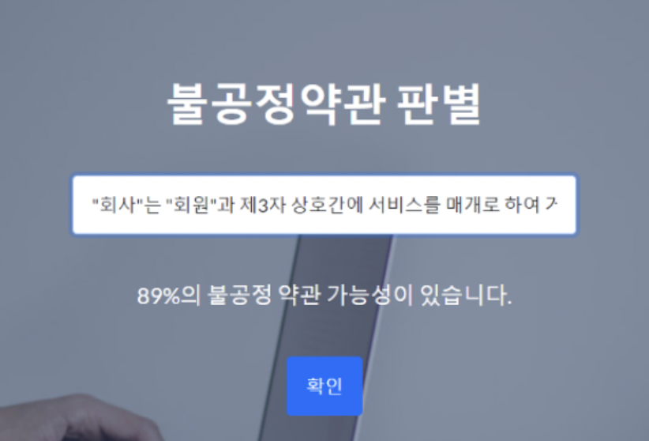
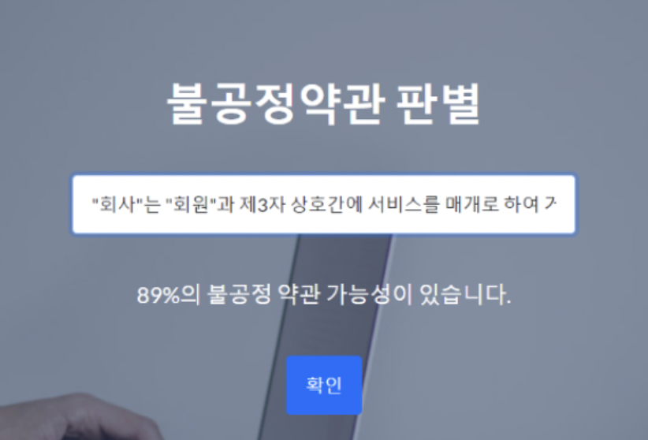

X-memory
(AI 태그 검출 기반 스마트 앨범 앱)
삼성 멀티캠퍼스 융복합 프로젝트(빅데이터 / AI / IoT / 클라우드)
X-memory : 과거 사진의 의미를 다시 상기시킬 수 있도록 도와주고자 정함 객체 인식으로 자동으로 태그를 생성하고, 생성된 태그로 검색이 가능 태그를 통한 사용자 일상 데이터 분석과 같은 새로운 가치를 창출
[기간] 2022.05.04 ~ 2022.06.14 [프로젝트 인원] 9명 [사용 기술] Kotlin, Android Studio, Python, Tensorflow, pandas, opencv, mysql, aws ec2, s3, docker, matplotlib [목적] 사용자의 잊혀진 사진들에 대한 추억 상기 효과 제공 [프로젝트 요약] 빅데이터 / AI / IoT / 클라우드 팀으로 협업한 AI 태그 검출 기반 스마트 앨범 애플리케이션 [담당 업무] 팀장으로서 프로젝트 총괄 / 발표 코틀린 기반의 안드로이드 애플리케이션 틀 구현(액티비티) Django 서버와 로그인 / 회원가입 연동 카메라 / 갤러리 인텐트로 AWS S3 서버에 이미지 업로드(클라우드 팀과 협업) 프로필 페이지 구현(Mysql 연동) UI / UX 디자인 [성과] 융복합 프로젝트 경진대회 우수상
기술 스택
시스템 구성도

클라우드 구성도
프로젝트 소개
주요 기능

시연 영상
<사진 업로드>


<태그 추가 & 태그 검색>

<데이터 분석 & 시간 분석 & 장소 분석>


프로젝트 성과

 
